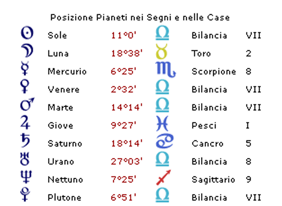
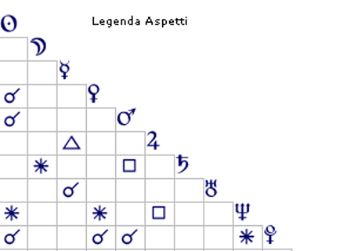

Casi Astropsicologici
Il palcoscenico degli altri: quando la competizione diventa struttura dell'anima
I dati personali sono stati modificati per tutelare la privacy


Il Palcoscenico degli Altri: Quando la Competizione diventa Struttura dell'Anima
Ciò che colpisce immediatamente in questo tema natale è una configurazione che parla con grande chiarezza di un bisogno profondo e strutturale di competizione. Tutti i pianeti che governano l'Ariete — segno per eccellenza della sfida, dell'affermazione di sé e del primato — si trovano nel segno opposto della Bilancia, concentrati nella settima casa, quella dell'Altro. È come se l'energia più primitiva e vitale del soggetto, invece di trovare espressione diretta nel mondo, si fosse orientata interamente verso il confronto con gli altri, trasformando ogni relazione in un'arena in cui misurare il proprio valore.
Questa configurazione trova una corrispondenza precisa nella psicologia adleriana. Alfred Adler (1912) descrisse il meccanismo della compensazione del sentimento di inferiorità: laddove l'individuo percepisce inconsciamente una propria inadeguatezza di fondo, sviluppa una spinta verso la superiorità che si manifesta in ogni contesto relazionale come una gara da vincere. Il motto dell'Ariete — "io sono il primo" — diventa così non un'affermazione di forza, ma il segnale di una fragilità che cerca continua conferma dall'esterno.
La radice di questa fragilità è rintracciabile nella prima casa del tema natale, interamente occupata dal segno dei Pesci che è intercettato. I Pesci rappresentano, sul piano psicologico, la dissoluzione dei confini, la difficoltà a percepire il proprio Sé come separato e distinto dal resto del mondo. Questa configurazione richiama il concetto winnicottiano di falso Sé (Winnicott, 1960): una costruzione difensiva che l'individuo presenta al mondo esterno per compensare l'assenza di un nucleo identitario solido. Giove in prima casa rinforza la tendenza a mettersi continuamente in mostra, non per autentica esuberanza, ma perché la visibilità diventa l'unico modo per ottenere un riscontro della propria esistenza e del proprio valore. Siamo di fronte a ciò che Kohut (1971) definì bisogno di specchio: il soggetto cerca negli occhi degli altri la conferma di sé che non ha potuto costruire internamente.
La tripla congiunzione Plutone, Sole e Marte in Bilancia, cuore pulsante dello stellium in settima casa, riceve un sestile da Nettuno posto in nona casa. Astrologicamente, la nona casa parla di espansione, avventura e conquista, con il suo motto implicito "io vado più lontano" — ma più lontano degli altri, come suggerisce il collegamento alla settima. Questa configurazione descrive bene ciò che accade quando un'energia competitiva intensa non trova il canale appropriato per esprimersi. Il soggetto avrebbe voluto realizzarsi nel mondo dello sport, un contesto in cui la competizione è strutturata, regolata e socialmente legittima. La mancata realizzazione di questo desiderio ha prodotto quello che Kohut (1977) chiamò il fallimento della traiettoria del Sé grandioso: l'energia competitiva, privata del suo alveo naturale, si è riversata indiscriminatamente su ogni tipo di interazione interpersonale, rendendo ogni scambio quotidiano una potenziale occasione di affermazione o sconfitta.
Questa delusione è ulteriormente precisata dalla posizione di Giove, governatore della decima casa — quella della realizzazione professionale e sociale — che si trova in prima casa, leso da Nettuno in nona. È un'immagine astrologica di grande efficacia clinica: il pianeta che dovrebbe indicare la strada verso il successo concreto è invece intrappolato nell'orbita dell'Io, e il suo governatore naturale, Nettuno, porta con sé quella stessa nebbia dissolvente che caratterizza la prima casa in Pesci. Il sogno di realizzazione rimane appunto un sogno, e la frustrazione che ne deriva alimenta ulteriormente il bisogno di affermarsi nelle relazioni quotidiane.
La quadrupla congiunzione Venere, Plutone, Sole e Marte in Bilancia aggiunge un elemento ulteriore: il soggetto cerca di essere ammirato attraverso il fascino personale e modi eleganti, utilizzando la propria capacità seduttiva come strumento di affermazione. Questo rimanda alla teoria di Kernberg (1975) sulle organizzazioni narcisistiche di personalità, in cui l'Altro non è mai vissuto come soggetto autonomo ma come estensione del proprio dramma interno: uno specchio da cui ottenere conferma, o una minaccia da neutralizzare. La Luna in terza casa rafforza questa lettura, indicando un bisogno intenso di essere ammirato e di ricevere conferme sociali continue, quasi che ogni interazione dovesse sempre ricominciare da capo il lavoro di costruzione di un'immagine di sé accettabile.
Mercurio in Scorpione, congiunto ad Urano e in ottava casa, descrive una mente acuta, capace di cogliere immediatamente ciò che non è visibile in superficie nelle dinamiche interpersonali. Questa intelligenza intuitiva è una risorsa genuina, ma può scivolare — specialmente sotto pressione — verso modalità relazionali manipolative: omissione strategica di informazioni, distorsione della verità, uso strumentale delle relazioni. Il soggetto instaura rapporti con gli altri prevalentemente su basi utilitaristiche, cogliendo le opportunità prima che gli altri le vedano. Dal punto di vista psicodinamico, questi comportamenti richiamano le difese di scissione e identificazione proiettiva descritte da Melanie Klein (1946) e sviluppate da Bion (1962): l'individuo interagisce con l'Altro non sulla base di chi egli realmente sia, ma sulla base di ciò che proietta su di lui.
Vale la pena soffermarsi su un aspetto che la letteratura di psicologia perinatale ha cominciato ad esplorare con crescente interesse. La presenza di Giove nei Pesci in prima casa quadrato a Nettuno in nona casa, potrebbe rimandare a esperienze traumatiche vissute nella fase prenatale, che lasciano nell'individuo una memoria somatica di vulnerabilità esistenziale. Rank (1924) parlava del trauma della nascita come prima esperienza di separazione e annientamento: in questa luce, il bisogno compulsivo di affermare la propria presenza potrebbe contenere una dimensione di sopravvivenza ante-verbale, il cui eco risuona in ogni contesto relazionale adulto.
Il contesto adolescenziale appare come un altro momento biografico cruciale. La quarta casa, occupata dal segno dei Gemelli, suggerisce un ambiente familiare in apparenza vivace e leggero; tuttavia il suo governatore, Mercurio, si trova in ottava casa — quella che si oppone direttamente all'ambiente natale — indicando che proprio durante l'adolescenza il soggetto ha preso coscienza della propria diversità rispetto alla famiglia d'origine, allontanandosene prima mentalmente e poi fisicamente. Erikson (1968) descrive l'adolescenza come il periodo critico per la risoluzione della crisi identità versus diffusione del ruolo: una rottura vissuta in questa fase senza adeguata elaborazione non fa che accentuare la fragilità identitaria di base.
Il quadro complessivo che emerge è quello di un individuo che ha imparato a sopravvivere costruendo all'esterno ciò che non ha potuto consolidare all'interno. La competizione pervasiva, il bisogno di riconoscimento, il fascino seduttivo e la capacità manipolativa non sono tratti di forza ma difese sofisticate contro un Io che si percepisce fragile, esposto, a rischio di dissolversi. Un lavoro terapeutico efficace con questo profilo dovrebbe mirare, con grande pazienza e delicatezza, alla costruzione di quella che Bowlby (1988) chiamò una base sicura interna: la possibilità, ancora tutta da scoprire, di esistere senza dover continuamente dimostrare di valere.